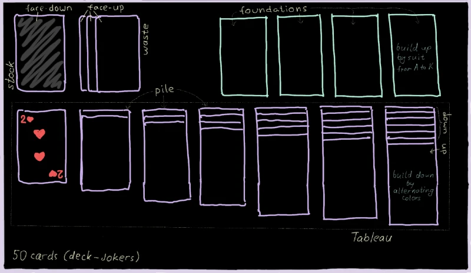
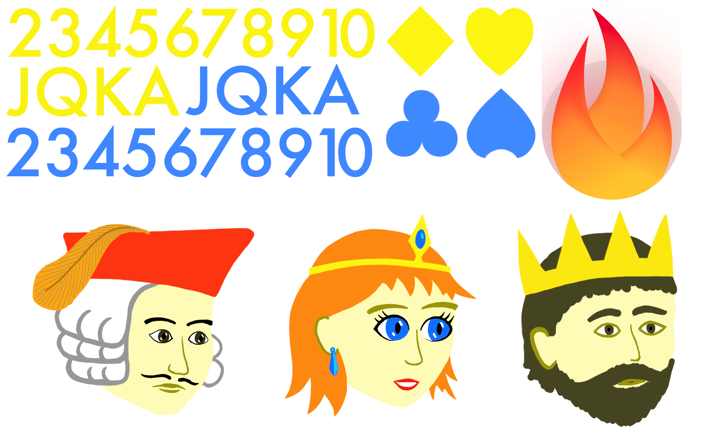

1. Preparation¶
Before you begin any kind of game project, you need to give it a name. For
this tutorial the name will be simply klondike.
Having this name in mind, please head over to the tutorial
and complete the necessary set up steps. When you come back, you should
already have the main.dart file with the following content:
import 'package:flame/game.dart';
import 'package:flutter/widgets.dart';
void main() {
final game = FlameGame();
runApp(GameWidget(game: game));
}
Planning¶
The start of any project usually feels overwhelming. Where even to begin? I always find it useful to create a rough sketch of what I am about to code, so that it can serve as a reference point. My sketch for the Klondike game is shown below:

Here you can see both the general layout of the game, as well as names of various objects. These names are the standard terminology for solitaire games. Which is really lucky, because normally figuring out good names for various classes is quite a challenging task.
Looking at this sketch, we can already imagine the high-level structure of the
game. Obviously, there will be a Card class, but also the Stock class, the
Waste class, a Tableau containing seven Piles, and 4 Foundations. There
may also be a Deck. All of these components will be tied together via the
KlondikeGame derived from the FlameGame.
Assets¶
Another important aspect in any game development is the game’s assets. These includes images, sprites, animations, sounds, textures, data files, and so on. In such a simple game as Klondike we won’t need lots of fancy graphics, but still some sprites will be needed in order to draw the cards.
In order to prepare the graphic assets, I first took a physical playing card and
measured it to be 63mm × 88mm, which is the ratio of approximately 10:14.
Thus, I decided that my in-game cards should be rendered at 1000×1400 pixels,
and I should draw all my images with this scale in mind.
Note that the exact pixel dimensions are somewhat irrelevant here, since the images will in the end be scaled up or down, according to the device’s actual resolution. Here I’m using probably a bigger resolution than necessary for phones, but it would also work nicely for larger devices like an iPad.
And now, without further ado, here’s my graphic asset for the Klondike game (I’m not an artist, so don’t judge too harshly):

Right-click the image, choose “Save as…”, and store it in the assets/images
folder of the project. At this point our project’s structure looks like this
(there are other files too, of course, but these are the important ones):
klondike/
├─assets/
│ └─images/
│ └─klondike-sprites.png
├─lib/
│ └─main.dart
└─pubspec.yaml
By the way, this kind of file is called the sprite sheet: it’s just a
collection of multiple independent images in a single file. We are using a
sprite sheet here for the simple reason that loading a single large image is
faster than many small images. In addition, rendering sprites that were
extracted from a single source image can be faster too, since Flutter will
optimize multiple such drawing commands into a single drawAtlas command.
Here are the contents of my sprite sheet:
Numerals 2, 3, 4, …, K, A. In theory, we could have rendered these in the game as text strings, but then we would need to also include a font as an asset – seems simpler to just have them as images instead.
Suit marks: ♥, ♦, ♣, ♠. Again, we could have used Unicode characters for these, but images are much easier to position precisely.
In case you’re wondering why these are yellow/blue instead of red/black – turns out, black symbols don’t look very nice on a dark background, so I had to adjust the color scheme.
Flame logo, for use on the backs of the cards.
Pictures of a Jack, a Queen, and a King. Normally there would be four times more of these, with a different character for each suite, but I got too tired drawing these.
Also, you need to tell Flutter about this image (just having it inside the
assets folder is not enough). In order to do this, let’s add the following
lines into the pubspec.yaml file:
flutter:
assets:
- assets/images/
Alright, enough with preparing – onward to coding!